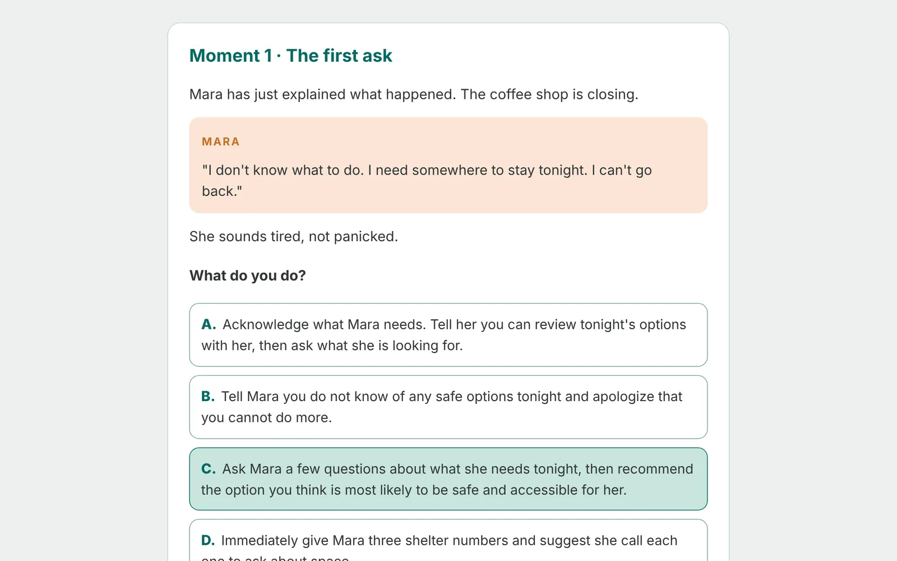
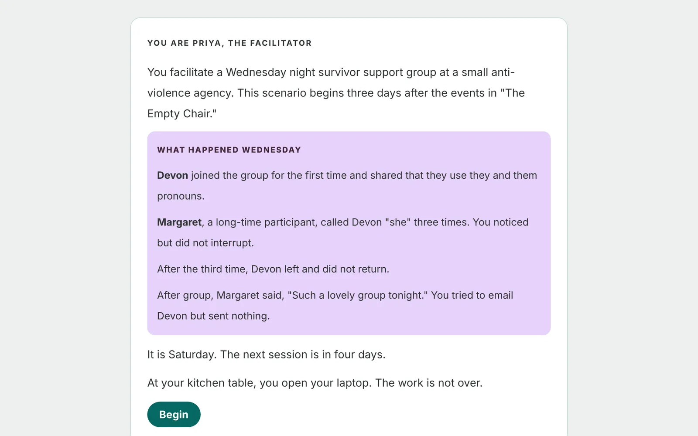
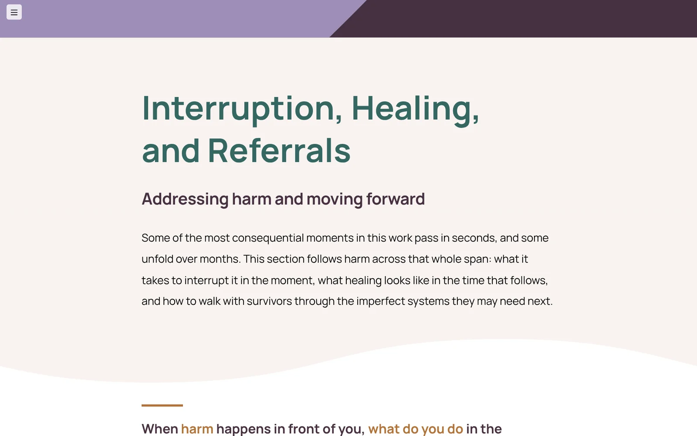

Course with branching scenarios for support centre staff
I turned a PDF guide on inclusive practice in the anti-violence sector into an interactive course, and added branching scenarios where making choices helps learners understand procedures.
Open the course (new tab) Go to the section with the scenarios (new tab)



The need
A sexual violence support centre asked me to turn its PDF guide for staff at anti-violence organizations into an online, interactive course. The course teaches inclusive practice with queer and trans survivors of sexual violence.
The brief
I used the Mighty extension to create a clean, modern course in Articulate Rise that aligned with the guide’s visual identity. It also helped me create a fillable reflection workbook where learners can keep the reflections they wrote in the course. I also built two branching scenarios in custom HTML for section seven.
- Role
- Instructional designer and e-learning developer
- Tools
- Rise, HTML, CSS, JavaScript, fillable PDF, Claude
Design decisions
- I set each scenario in a role that learners might actually occupy at work, as a crisis line worker in one and a group facilitator in the other.
- I started the facilitator scenario after a narrated video piece, so that learners begin with the context a facilitator would have.
- I gave every option a consequence and wrote feedback that asks learners to reflect on which response they reached for first and why.
- I put the reflection questions in a fillable workbook that learners can download and keep.
AI
Making new things possible
What AI did
Claude wrote the code for the branching scenarios from my scripts, and created a fillable PDF workbook based on the reflection questions throughout the course.
What I did
I structured the course based on the guide, co-wrote the scenarios with the centre, and decided to implement the reflection questions and corresponding workbook.